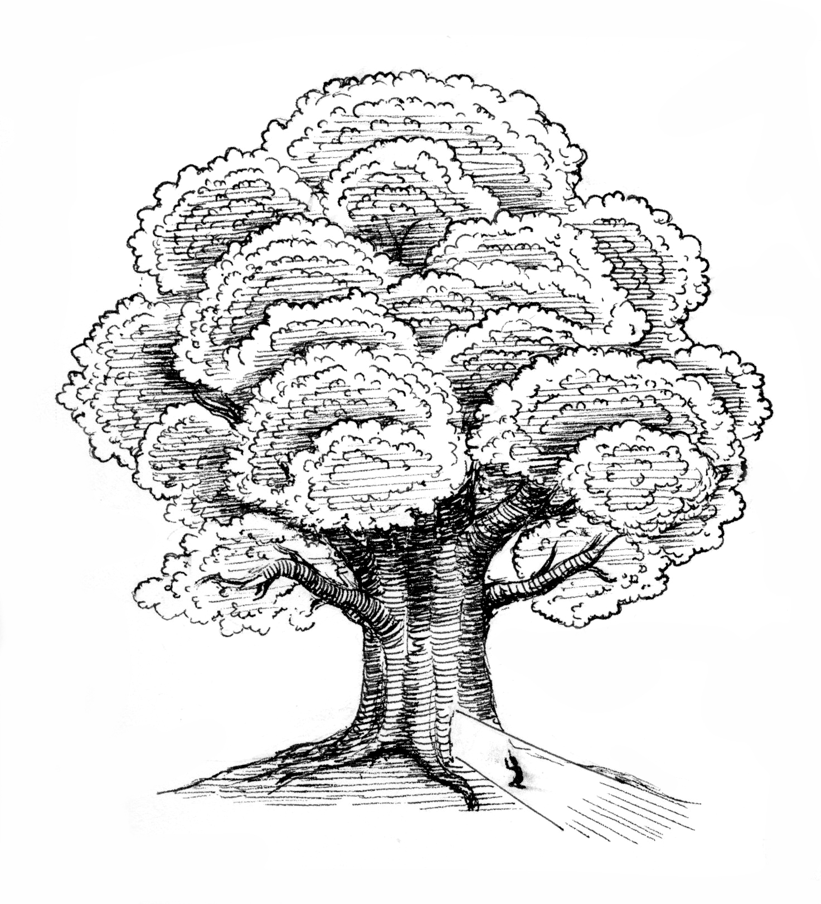

Our story begins in an ancient land far away from here. In this land, there was a kingdom called Serenity. Well, I guess it was not quite a kingdom yet as it had no king. Maybe settlement is a better term. Serenity lived up to its name, large and untroubled by war or hardship. Immediately outside of Serenity was a massive forest, the only reason it was able to prosper. Trees provided lumber, a large lake provided clean water, and the forest teemed with game. Fruits hung from every tree, medicinal herbs and spices abounded, and in flatter grassy areas was grain. All seemed to replenish overnight. A bizarre reality, as no one in Serenity tended the forest. Since the Serenites did not have to labor to ensure their survival, they could devote their time almost entirely to the sciences, arts, and medicine. Even stranger was that Serenity had no ruler. With plentiful resources, there was no feuding, and no need for a keeper of balance.
The people of Serenity long ago had built a wall around their settlement and the forest. "Why would they need to protect themselves from outsiders and thieves if the resources were endless?” you might ask. A good question: the citizens from generations ago knew the answer. The walls were built to protect Maah, but the newer generations had long forgotten this. Maah was the center tree of the forest, much bigger than the others, nearly three times larger. Maah alone in the forest had no fruit or use. The people left it undisturbed. There was no reason to cut it down anyways, since so many other trees could be used for lumber.
The area beyond the wall was almost entirely barren for hundreds of miles. Somewhere in this wasteland was the kingdom of Vytalis. I suppose kingdom is the wrong word again, as it then did not have a king. In the past, the fertile land of Vytalis helped to provide for its people. It is forgotten when, but sometime long ago the soil began to dry up, and all crumbled. With the little arable land left, the Vytalians struggled to support themselves. They could not cultivate enough crops, and had to scout the surrounding lands in search of more food. So many perished. Those who survived were malnourished and sprouted strange green blemishes all over their bodies. Although great warriors in their past prosperity, their pitiful condition did not allow them to maintain their large army, nor could they maintain fighting form. However, the little remaining military did preserve their fighting strength, technique and strategy.
One day, Maah bore two tiny fruits on its largest branch high above the ground. At first, no one noticed, as it had never produced any fruit in their entire history. Over many months, these fruits grew larger and larger, eventually becoming the size of a person, much to the amazement of the people of Serenity. Then one night there was a horrible storm. The winds howled as never before, the rains poured down in streams, and lightning forked across the dark skies. In the extreme winds and darkness, one of the fruits was knocked from the branch and fell over the defensive wall.
The morning after, a Vytalian scout making his normal rounds in search of food came to the wall. He expected to see only Maah looming, but this time, he saw a giant fruit on its branch. Filled with optimism, he tried to find an entrance in the wall. The giant fruit could feed so many of his hungry people. He circled the wall to no avail. He did not return empty handed, however; he found the fallen fruit and brought news of it back to his own settlement of Vytalis, rounding up a group of their strongest to bear the bounty back.
The next morning after the storm, the people of Serenity too ventured out to notice one of the fruits missing. They searched frantically throughout the forest and within the settlement, of course they could not find it. If only they had checked outside the wall, they would have found the footprints and the imprint on the soft ground where the fruit had fallen.
In Vytalis, the people decided to cut the fruit open and divide it joyously amongst the people. The scout who found it had the honor of making the cut. Not knowing the nature or structure of the strange fruit, he decided to cut cautiously, slicing only the thin skin with his blade. The fruit seemed to convulse and shudder, and the Vytalians were shocked to see not a giant stone or pit, but a man inside. So great was their surprise that they forgot their hunger. Recovering, they removed him from the fruit, lay him down on the ground, and waited until he woke. He was given the name Thrall even before he opened his eyes. At the same time the Vytalians cut open the fruit, the fruit remaining on Maah began to open on its own accord. Citizens of Serenity, alerted to this, scaled Maah, bringing the opening fruit down to safety. They took it back to town, and the man who emerged given the name Seren.
Thrall and Seren quickly became inseparable from their respective settlements. Thrall had emerged from the fruit fully formed and in perfect health, so he was incorporated into the army. He passed the training with ease, and military strategy came to him naturally. For some reason, he did not develop the blemishes of his country fellows. All of this coupled with his otherworldly charm, gaining him a position as a general. Seren was a prodigy, mastering the arts, excelling in music, literature, philosophy, dance, and geometry. He too possessed an otherworldly charm, making him a prominent figure in Serenity.
Ever since discovering the fruit, the Vytalians began tunneling to gain entry to the forest. Thrall, fully informed of his story, was curious of his birth and wanted to visit his place of origin. When the tunnel was finally completed, he declared that he wanted to lead the expedition and his outstanding rank as a military general meant no opposition from the Vytalians. Seren was intrigued by his birth as well, and unlike Thrall, he was made aware that there were indeed two fruits originally. He realized he may have a lost sibling, but the people of Serenity never ventured outside of the walls. He could not act on his curiosity and search for his brother. Poor lad, he was forced to sit within the walls and enjoy a never ending golden age of Serenity.
The day finally came when the Vytalian army entered the walls of Serenity, armed with their finest weapons and armor. A woman gathering berries in the forest noticed them, and ran to sound an alarm. The fear of a breach set the Serenites into a panic. They mustered their all to face the intruders. The Vytalian army advanced to Maah, and faced the disorganized but able-bodied men of Serenity. No one in Serenity was trained as a warrior, and no one could even remember the last war. They could never have been ready for battle and did not even have armor. Instead, they brought rakes, protractors, spades, astrolabes, the biggest serving spoons they could find, and hatchets. I think one even brought his violin: he wasn't exactly the best musician and thought to use his gift for screeching as a weapon. Upon seeing the Vytalian army, the Serenites felt an initial surge of confidence as they outnumbered the emaciated Vytalians. The Serenites engaged the Vytalian soldiers, but the first few were easily dispatched. Seeing this, the remaining men surrendered.
Having secured this victory, Thrall removed his helmet. Seren saw him from a distance and thought he looked familiar, so he began to move forward to get a better view. Closer, he realized he was looking at his mirror image. He knew this had to be his lost brother. Upon seeing Seren, Thrall was stunned. He stumbled backwards, nicking Maah with his exposed sword. Seren shouted, "Brother!” Thrall stared in disbelief, but could not get past Seren's uncanny resemblance to himself. As if by instinct, they approached one another. Seren pointed to Maah and told of his birth from the tree's fruit, which melted Thrall's hesitation. I mean honestly, who would come up with a story like that? They embraced and began to splutter out questions. They had so much to share with one another. However, their reunion would be cut short.
A blinding blue light began to pour from the spot where Thrall's blade had cut Maah, engulfing one of his soldiers standing in its path. When it finally faded, he was barely recognizable. He no longer looked starved, the green blemishes had been cleaned from his skin, and he was in perfect health. The light had filled him with life. The other Vytalian soldiers saw this, and a soldier quickly made his own gash into Maah. Blue light poured forth again, revitalizing him. The Vytalian army entered a frenzy, every soldier rushing to the base of the tree to strike it. Seren begged Thrall to command his army to stop. Thrall tried, but his pleas fell on deaf ears. The army of Serenity too tried to stop this, but could not offer much resistance. After neverending blows, Maah could not support its own weight. It ultimately fell. Its center was exposed. The entire core, the very essence of life, flooded out in a blinding torrent. All shrivelled.
Maah, you see, had slowly absorbed the anima from all living things for eons, leaving the entire region a barren wasteland. The people of Serenity had survived unscathed because they used resources from the forest which was nurtured by Maah's falling leaves and twigs. They were simply reabsorbing their own lost anima. The other civilizations were too distanced from Maah and ultimately perished. I think that the energy accumulated within Maah, if released slowly, could have revived the Vytalians, but the frantic cutting ruined this possibility.
In time, a husband and wife would journey searching for a new life. They would stumble upon a landscape hundreds of miles around covered in low brush, full of plants and animals. Strangely, they would notice a huge crater in the center of the land. Even stranger, they would find no people. Barely visible was a small sapling, which they took for a sign of their new family and the roots they were to put down. In that very spot, they decided to establish themselves as the first settlers of this land.
Dark Mode!